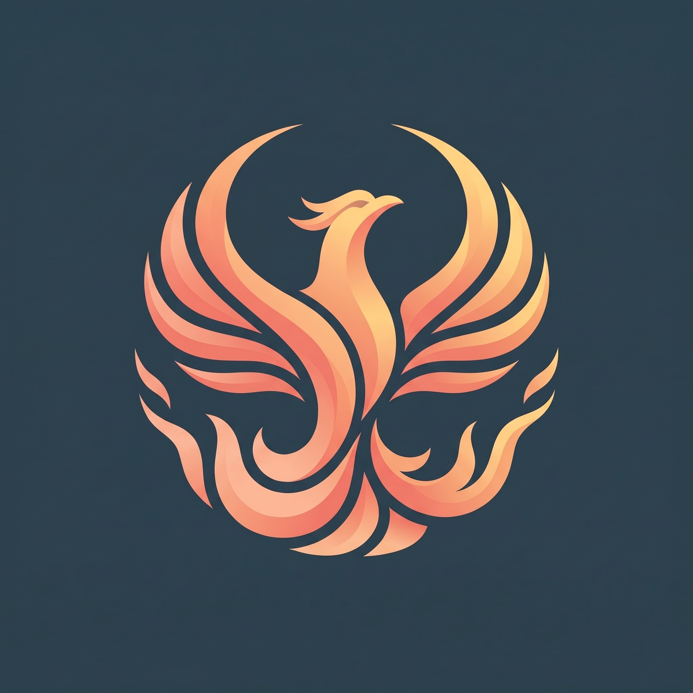

Be there.
We build for the feeling of stepping into a world, not just looking at one.

SECONDFIREGAMESINDEPENDENT GAME STUDIO / EST. 2026
We're building worlds
you can step inside.
01 / OUR STARTING POINT
SecondFireGames is an independent studio exploring what becomes possible when a game feels like a place. Our first step is virtual reality.
02 / IN DEVELOPMENT
ACTIVE PROJECTFIRST EXPERIENCE
Our first immersive experience is being developed for Meta Quest. We'll share more when it's ready.
A new world is taking shape.
03 / WHAT DRIVES US
THOUGHT INTO EXPERIENCEWe build for the feeling of stepping into a world, not just looking at one.
Every interaction should give players a reason to move, react and explore.
New technology matters when it lets us create something meaningful.
04 / THE STUDIO
SecondFireGames is an independent game studio founded in 2026. We're at the beginning, building our first virtual reality project and shaping how we want to make games.
BASED IN TÜRKİYE
05 / PEOPLE
TWO FOUNDERS. ONE STUDIO.
CEO & Co-Founder

CTO & Co-Founder
06 / STAY CONNECTED
Our first project is still taking shape. Follow the studio as we build it.